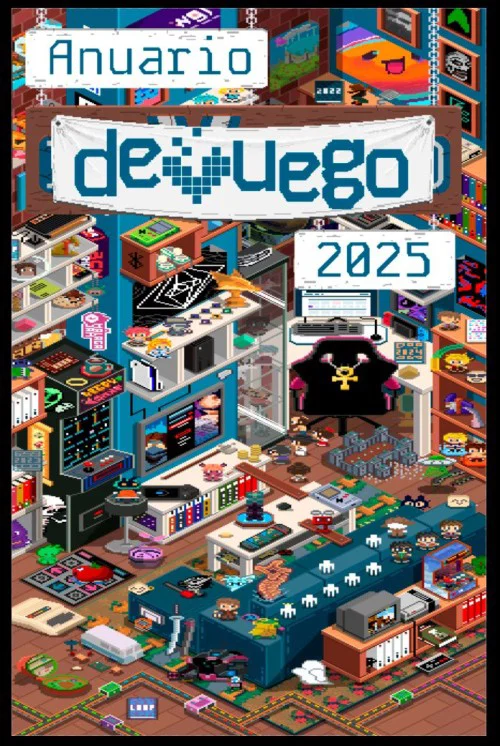
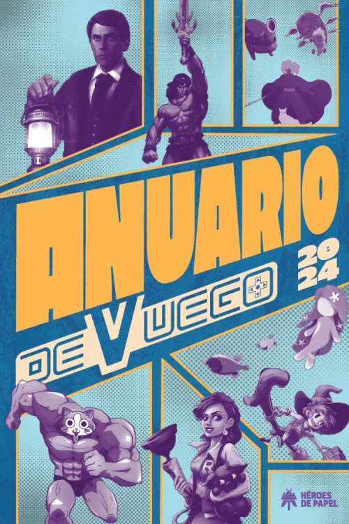

Anuario DeVuego 2025
Participación como colaborador en el Anuario DeVuego 2025, una publicación dedicada a documentar y poner en valor los videojuegos y la industria española durante ese año.
Ver ficha oficial ↗Ediciones 2024 y 2025
Colaboraciones en los volúmenes que documentan y ponen en valor la industria española del videojuego.

Participación como colaborador en el Anuario DeVuego 2025, una publicación dedicada a documentar y poner en valor los videojuegos y la industria española durante ese año.
Ver ficha oficial ↗
Participación como colaborador en el Anuario DeVuego 2024, una publicación dedicada a documentar y poner en valor los videojuegos y la industria española durante ese año.
Ver ficha oficial ↗